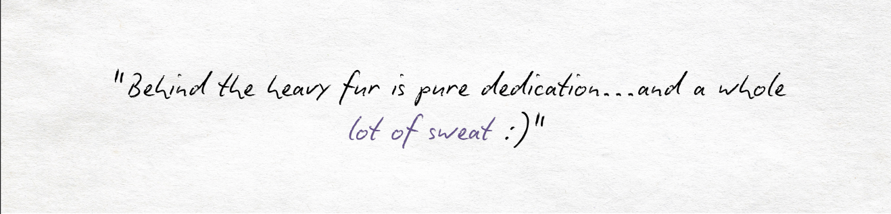
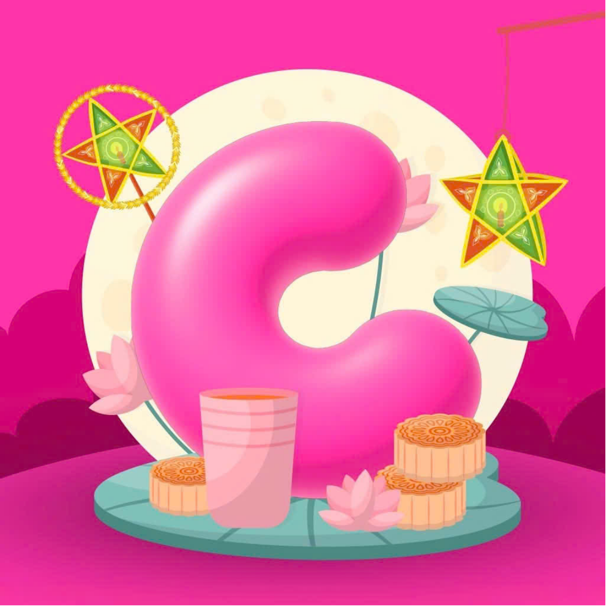
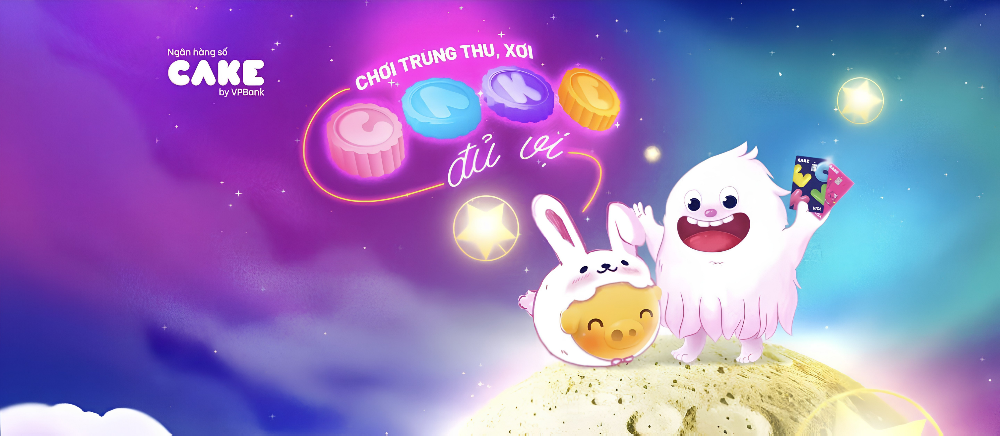
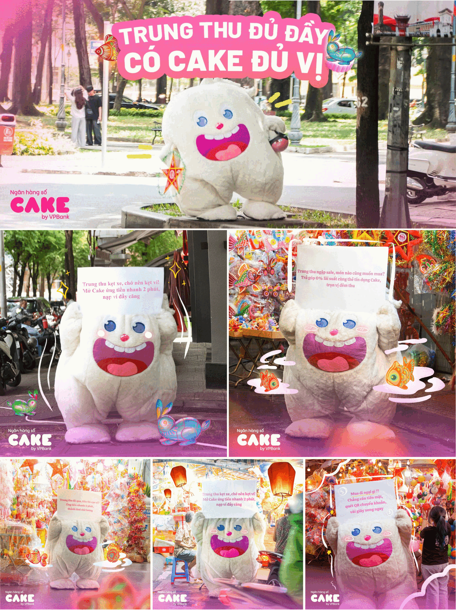
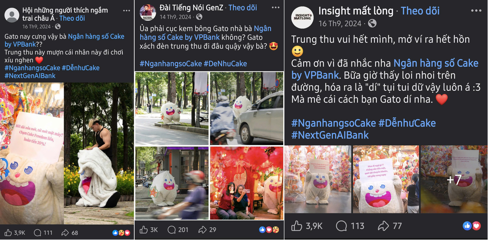
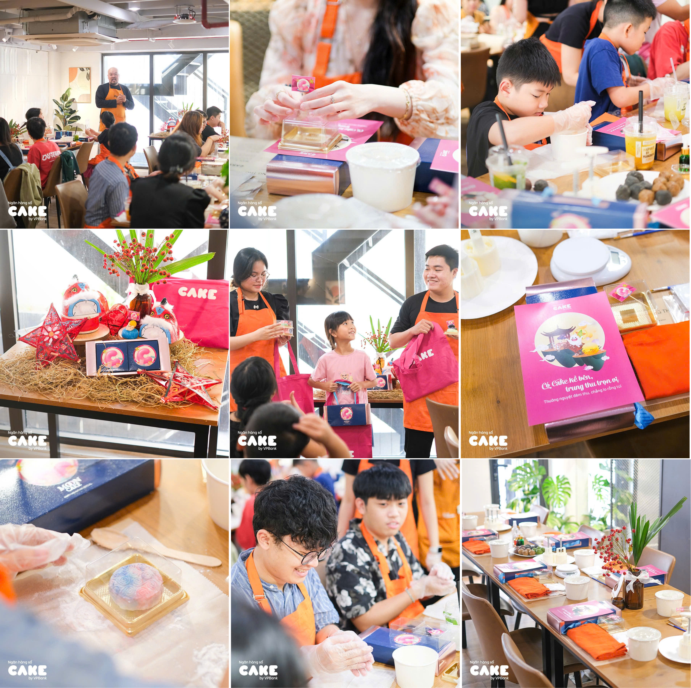
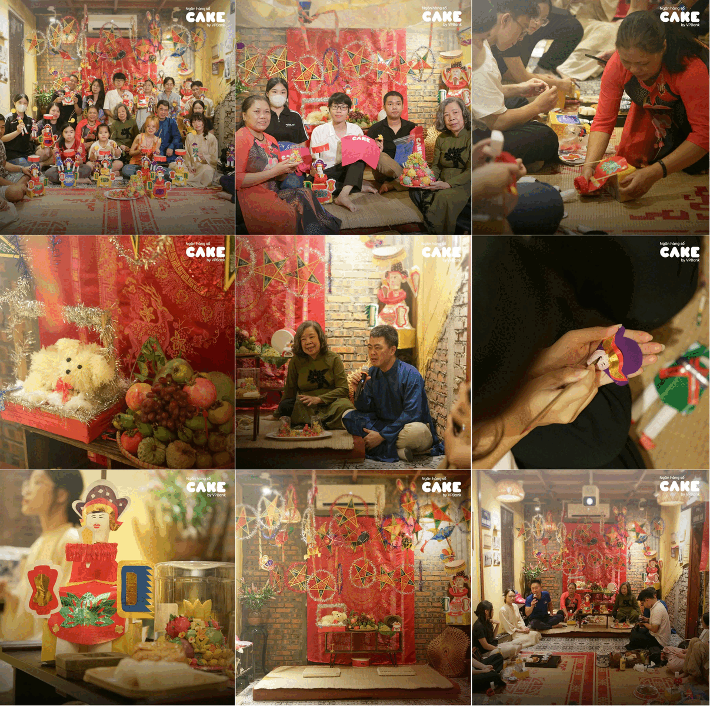
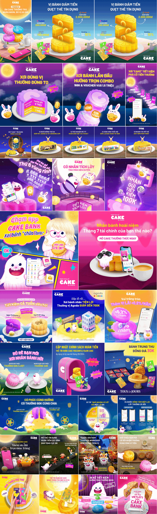

Background & Insight
This 2024 Mid-Autumn, in a crowded festive season, Cake uses its own name as a simple but strong connection to the occasion. The campaign “Trung Thu Đủ Đầy, Có Cake Đủ Vị” plays on the idea of mooncakes with many fillings, where each “vị” represents a key benefit of Cake.

Execution
We launched an integrated campaign that brings “Cake Đủ Vị” to life through a mix of social content within the theme and real-life experiences, from Mid-Autumn baking workshops, lantern-making activities, to mooncake moments. The journey builds up to a playful street stunt where mascot Gato roams the city spreading festive vibes, ending with a surprising reveal that sparks curiosity and buzz.

Stunt
Mascot Gato appears across the city during Mid-Autumn, holding fun, relatable messages that spread festive vibes and highlight Cake's benefits. The moment builds curiosity and buzz, leading to a surprising reveal that turns the mascot into the center of attention.

Then, we reveal who's behind the mascot. The unexpected identity inside sparks conversation, amplifies buzz, and gives the campaign a memorable twist that people want to share.

Workshop
A series of hands-on Mid-Autumn workshops where people join activities like making mooncakes and lanterns, creating a more personal and festive experience.
Mooncake-making

Lantern-making

Social Activation
A series of posters under the “Cake Đủ Vị” theme, where each mooncake flavor represents a key benefit of Cake — turning familiar visuals into simple ways to show how Cake makes Mid-Autumn easier and more complete.
